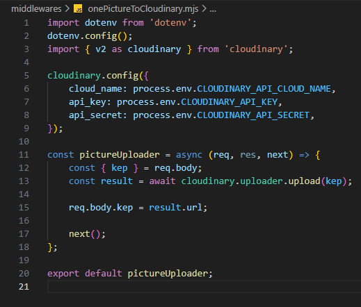

Új könyv felvétele - onePictureToCloudinary.mjs
Új könyv felvétele - onePictureToCloudinary.mjs

Ebben a részben szerkesztjük a middlewares mappában a onePictureToCloudinary.mjs állományt, amelyben összekötjük a webszerverünket a Cloudinary felülettel és egy képet töltünk fel.
-
Szerkesszük a
.envállományt. és

-
CLOUDINARY_API_CLOUD_NAME=saját felhőnév...- mindenkinek a saját csatlakozási értékei aCloudinaryfelületről.
-
-
Szerkesszük a
onePictureToCloudinary.mjsállományunkat.-
import dotenv from 'dotenv';- adotenvnpmcsomag beimportálása. -
dotenv.config();- az értékeket a.envállományban keresse abackendmappában. -
import { v2 as cloudinary } from 'cloudinary';- acloudinarynpmcsomag beimportálása, mintv2. -
cloudinary.config({...})- aCloudinaryoldalról vett értékek beállítása a.envállományból. -
const pictureUploader = async (req, res, next) => {...};- apictureUploaderfüggvény létrehozása, amellyel feltöltjük a képet a felhőbe. -
const { kep } = req.body;- szedjük ki akeptulajdonságot areq.body-ból. -
const result = await cloudinary.uploader.upload(kep);- töltsük fel a felhőbe. -
req.body.kep = result.url;- legyen areq.body.kepúj értéke ez aURLcím. -
next();- lépjünk a következőmiddleware-re. -
export default pictureUploader;- apictureUploaderfüggvény alapértelmezett kivitele.
-